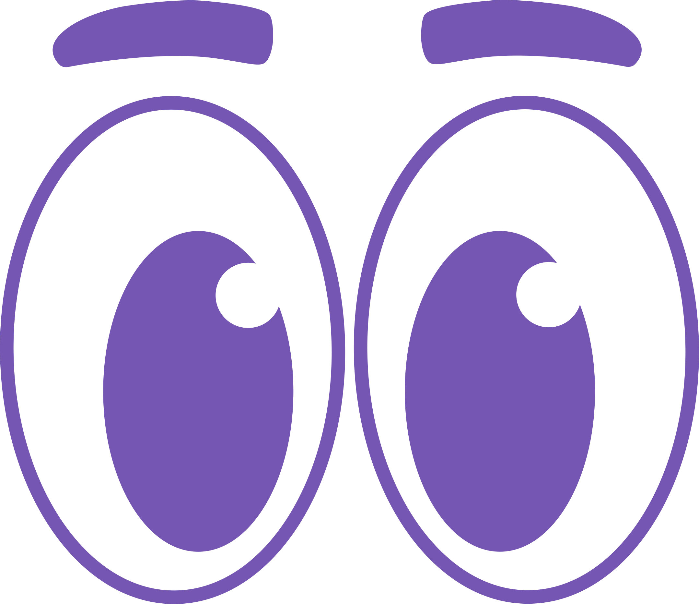

<!doctype html>
<html lang="en">
<head>
<meta charset="utf-8">
<meta name="viewport" content="width=device-width, initial-scale=1">
<title>EyeCon Quiz</title>
<link rel="icon" type="image/png" href="assets/sprites/piko.png">
<link rel="preconnect" href="https://fonts.googleapis.com">
<link rel="preconnect" href="https://fonts.gstatic.com" crossorigin>
<link href="https://fonts.googleapis.com/css2?family=Baloo+2:wght@700;800&family=Nunito:wght@600;700;800&display=swap" rel="stylesheet">
<style>
  :root{--ink:#123b54;--plum:#3b172e;--teal:#77b9af;--teal-dark:#4f938a;--cream:#fcf7ef;--purple:#9b7bdc;--purple-dark:#7656b3;--bg:#bfebe9;}
  *{box-sizing:border-box;}
  html,body{margin:0;min-height:100%;background:var(--bg);color:var(--plum);font-family:'Nunito',system-ui,sans-serif;}
  body{display:grid;place-items:center;min-height:100vh;padding:1.5rem 1rem;}
  .card{width:min(44rem,100%);padding:2rem 2.25rem;border:3px solid var(--teal);border-radius:1.75rem;background:var(--cream);box-shadow:0 .5rem 0 var(--teal-dark);}
  .top{display:flex;align-items:center;gap:.75rem;margin-bottom:1rem;}
  .top img{width:3rem;height:auto;}
  .tag{font:800 1rem 'Nunito';letter-spacing:.14em;text-transform:uppercase;color:#2f7a70;}
  .count{margin-left:auto;font:800 1rem 'Nunito';color:var(--ink);}
  .bar{height:.75rem;border-radius:999px;background:#e3f1ec;overflow:hidden;margin-bottom:1.5rem;}
  .bar i{display:block;height:100%;background:var(--purple);transition:width .3s ease;}
  h1{margin:0 0 .5rem;font:800 2.25rem/1.1 'Baloo 2',sans-serif;color:var(--ink);}
  h2{margin:0 0 1.25rem;font:800 1.5rem/1.3 'Baloo 2',sans-serif;color:var(--plum);}
  p{margin:0 0 1rem;font:700 1.1rem/1.5 'Nunito';}
  .opts{display:grid;gap:.75rem;margin:0 0 1.5rem;padding:0;list-style:none;}
  .opt{all:unset;box-sizing:border-box;display:flex;align-items:center;gap:.9rem;width:100%;padding:.9rem 1.1rem;border:3px solid #e4d8ca;border-radius:1rem;background:#fff;font:700 1.1rem/1.35 'Nunito';cursor:pointer;transition:border-color .15s,background .15s,transform .15s;}
  .opt:hover{border-color:var(--teal);transform:translateY(-2px);}
  .opt:focus-visible{outline:3px solid #f5b83d;outline-offset:3px;}
  .opt b{display:grid;place-items:center;flex:none;width:2rem;height:2rem;border-radius:50%;background:#e3f1ec;color:#2f7a70;font:800 1rem 'Baloo 2';}
  .opt[aria-pressed="true"]{border-color:var(--purple-dark);background:#f1ebfb;}
  .opt[aria-pressed="true"] b{background:var(--purple-dark);color:#fff;}
  .actions{display:flex;justify-content:space-between;align-items:center;gap:1rem;}
  .btn{all:unset;box-sizing:border-box;padding:.8rem 2rem;border-radius:1rem;background:var(--purple);color:#fff3d6;font:800 1.4rem 'Baloo 2',sans-serif;box-shadow:0 .3rem 0 var(--purple-dark);cursor:pointer;text-align:center;}
  .btn:disabled{opacity:.45;cursor:not-allowed;}
  .btn:focus-visible{outline:3px solid #f5b83d;outline-offset:3px;}
  .ghost{all:unset;cursor:pointer;font:800 1rem 'Nunito';color:#5a6f6a;text-decoration:underline;}
  .ghost:disabled{visibility:hidden;}
  .score{display:inline-block;margin:.5rem 0 1rem;padding:.5rem 1.25rem;border-radius:1rem;background:#fff2cf;border:3px solid #f2d27a;font:800 2rem 'Baloo 2';color:var(--ink);}
  .note{font:700 .95rem 'Nunito';color:#5a6f6a;}
  .consent{max-height:16rem;overflow:auto;padding:1rem 1.25rem;border:2px solid #e4d8ca;border-radius:1rem;background:#fff;font:600 1rem/1.5 'Nunito';}
  .consent p{font:600 1rem/1.5 'Nunito';margin:0 0 .6rem;}
  .consent ul{margin:.25rem 0 .6rem;padding-left:1.25rem;}
  .check{display:flex;gap:.6rem;align-items:flex-start;margin:1rem 0;font:800 1.05rem 'Nunito';cursor:pointer;}
  .check input{width:1.3rem;height:1.3rem;margin-top:.15rem;accent-color:#7656b3;}
  .field{display:grid;gap:.35rem;margin-bottom:1rem;font:800 1rem 'Nunito';}
.ev-h{margin:1.5rem 0 .5rem;font:800 1.2rem 'Nunito';color:var(--plum);}
  .ev{margin:0 0 .75rem;padding:.75rem 1rem;border:2px solid #e4d8ca;border-radius:.8rem;background:#fff;}
  .ev-t{margin:0 0 .35rem;font:700 1rem/1.4 'Nunito';color:var(--plum);}
  .ev-scale{clear:both;display:flex;gap:.5rem;}
  .ev-scale label{flex:1;cursor:pointer;position:relative;}
  .ev-scale input{position:absolute;opacity:0;}
  .ev-scale span{display:grid;place-items:center;min-height:2.5rem;border:2px solid #e4d8ca;border-radius:.6rem;font:800 1.1rem 'Nunito';color:var(--plum);}
  .ev-scale input:checked+span{background:#2f7a70;border-color:#2f7a70;color:#fff;}
  .ev-scale input:focus-visible+span{outline:3px solid #f5b83d;outline-offset:1px;}
  .field textarea{padding:.7rem .9rem;border:2px solid #e4d8ca;border-radius:.8rem;font:700 1rem 'Nunito';color:var(--plum);}
  .field input,.field select{padding:.7rem .9rem;border:2px solid #e4d8ca;border-radius:.8rem;background:#fff;font:700 1.05rem 'Nunito';color:var(--plum);}
  .field input:focus,.field select:focus{outline:3px solid #f5b83d;outline-offset:1px;}
  .google{all:unset;box-sizing:border-box;display:flex;align-items:center;justify-content:center;gap:.75rem;width:100%;padding:.85rem 1rem;border:3px solid #e4d8ca;border-radius:1rem;background:#fff;font:800 1.15rem 'Nunito';cursor:pointer;}
  .google:hover{border-color:var(--teal);}
  .google:focus-visible{outline:3px solid #f5b83d;outline-offset:3px;}
  .or{display:flex;align-items:center;gap:.75rem;margin:1.25rem 0;color:#5a6f6a;font:800 .9rem 'Nunito';}
  .or::before,.or::after{content:'';flex:1;border-top:2px solid #e4d8ca;}
  .row{display:flex;gap:.75rem;}
  .row input{flex:1;min-width:0;}
  .row .btn{font-size:1.1rem;padding:.6rem 1.1rem;}
  .err{color:#a3142f;font:800 .95rem 'Nunito';min-height:1.2em;margin:.25rem 0 0;}
  .ok{color:#1d6a40;}
  @media (prefers-reduced-motion:reduce){*{transition:none!important;}}
  .fig{margin:0 0 1.25rem;padding:.75rem;border:3px solid #e4d8ca;border-radius:1rem;background:#fff;animation:figIn .35s ease-out both;}
  .fig svg{display:block;width:100%;max-height:13rem;}
  .opt-art{flex:none;width:3.5rem;height:2.75rem;}
  .opt-art svg{display:block;width:100%;height:100%;}
  @keyframes figIn{from{opacity:0;transform:translateY(.5rem) scale(.98)}to{opacity:1;transform:none}}
  @media (prefers-reduced-motion: reduce){.fig{animation:none}}
  .cmp{display:grid;gap:.75rem;margin:.5rem 0 1.25rem;}
  .cmp-row{display:grid;grid-template-columns:8.5rem 1fr auto;align-items:center;gap:.75rem;font:700 1rem 'Nunito',sans-serif;color:var(--ink);}
  .cmp-row b{font:800 1.25rem 'Baloo 2',sans-serif;text-align:right;white-space:nowrap;}
  .cmp-track{height:1.25rem;border-radius:999px;background:#e3f1ec;overflow:hidden;}
  .cmp-track i{display:block;height:100%;border-radius:999px;background:#b9a6de;}
  .cmp-row.post .cmp-track i{background:var(--purple-dark);}
  .cmp-gain{margin:.25rem 0 0;font:800 1.125rem 'Baloo 2',sans-serif;color:var(--ink);}
  .cmp-gain.up{color:#1d6a40;}
  .cmp-areas{width:100%;border-collapse:collapse;font:700 1rem 'Nunito',sans-serif;color:var(--ink);}
  .cmp-areas th,.cmp-areas td{padding:.5rem .75rem;border-bottom:2px solid #eee3d4;text-align:left;}
  .cmp-areas th{font-weight:800;color:#2f7a70;}
  .cmp-areas td.up{color:#1d6a40;font-weight:800;}.cmp-areas td.down{color:#a3142f;font-weight:800;}
  /* Fit one question (or one rating section) on screen: no scrolling. */
  body{padding:.75rem;}
  .card{padding:1.25rem 1.75rem;}
  .top{margin-bottom:.5rem;} .bar{margin-bottom:1rem;}
  h2{margin-bottom:.75rem;font-size:1.35rem;}
  .fig{margin-bottom:.75rem;padding:.5rem;}
  .fig svg{max-height:clamp(6rem,24vh,12rem);}
  .opts{gap:.6rem;margin-bottom:1rem;}
  .opt{padding:.65rem 1rem;}
  @media(min-width:640px){.opts{grid-template-columns:1fr 1fr;}}
  .ev{margin-bottom:.4rem;padding:.4rem .75rem;}
  @media(min-width:760px){.ev{display:grid;grid-template-columns:1fr 15rem;gap:1rem;align-items:center;}.ev-t{float:none;margin:0;}.ev-scale{clear:none;}} /* statement and scale side by side */
  .ev-scale span{min-height:2.25rem;}
  .ev-h{margin:.5rem 0;}
</style>
</head>
<body>
<main class="card" id="app" aria-live="polite"></main>
<script src="https://cdn.jsdelivr.net/npm/@supabase/supabase-js@2/dist/umd/supabase.min.js"></script>
<script src="js/config.js"></script>
<script src="js/db.js"></script>
<script src="js/quiz-art.js"></script>
<script>
(() => {
  // quiz.html?mode=pre (default) or ?mode=post. Same 20 questions; the answer key is `a`.
  const ALL_Q = [
    { q:'A button is 34px tall. On an 8-point grid, what height should it be changed to?', o:['30px','35px','32px or 40px','36px'], a:2 },
    { q:'Which of the following spacing values follows the 8-point grid?', o:['24px','6px','10px','15px'], a:0 },
    { q:'In UI design, what does “alignment” mean?', o:['All items on the page use one matching color','Items share the same edge or the same center','All text on the page uses the same font size','Items are spread out as far apart as possible'], a:1 },
    { q:'In a navigation bar, “Home” and “Contact” are at Y = 56px, but “About” is at Y = 64px. What is the correct fix?', o:['Change the Y value of “Home” to 64px','Make the “About” link bigger than the others','Change the color of the “About” link','Change the Y value of “About” to 56px'], a:3 },
    { q:'Why should the gaps between cards in the same row be equal?', o:['Equal gaps keep the page tidy and show that the cards belong together','Equal gaps make the text inside every card larger and easier to see','Equal gaps raise the color contrast between the cards and the page','Equal gaps make the page load faster on slow internet connections'], a:0 },
    { q:'A restaurant client writes, “Our menu cards are all over the place.” What is the most likely fix?', o:['Change the colors of the cards so each one stands out','Make the text on every card bigger and easier to read','Put the cards on the same line and space them evenly','Remove some of the cards so the page has fewer items'], a:2 },
    { q:'To center a title over a card, which must match?', o:['The top edge of the title and the top edge of the card','The color of the title and the color of the card border','The font size of the title and the width of the card','The center of the title and the center of the card'], a:3 },
    { q:'In UI design, what does “contrast” describe?', o:['How large the text is compared to the rest of the page','How much text stands out from the color behind it','How far apart the elements are from one another','How many different colors a single page uses'], a:1 },
    { q:'Under WCAG 2.2 Level AA, what is the minimum contrast ratio for normal-sized text?', o:['4.5:1','2:1','3:1','7:1'], a:0 },
    { q:'Gray text on a white background has a contrast ratio of 3.5:1. Does it pass WCAG 2.2 Level AA for normal text?', o:['Yes, because any ratio above 3:1 always passes','Yes, because gray is a neutral, readable color','It depends only on which font the text uses','No, because normal text needs at least 4.5:1'], a:3 },
    { q:'Light gray text on a white button is hard to read. What is the best fix?', o:['Make the text color lighter','Make the button smaller','Make the text color darker','Move the button to another place'], a:2 },
    { q:'A brand uses white text on a light orange button, and the text fails the contrast check. Which fix keeps the brand look?', o:['Change the text to yellow so it matches the bright orange button color','Use a deeper orange (or a dark text color) until the ratio passes','Remove the button completely and replace it with a plain text link','Make the button much wider so the white text has more room around it'], a:1 },
    { q:'Why does low-contrast text matter even if it looks fine to the designer?', o:['It makes the website load more slowly, especially on older phones with weak internet','It breaks the 8-point grid, so the layout no longer lines up with the other elements','It changes the size of the text whenever the page is printed out on paper','It becomes hard to read for people with weaker eyesight or on a phone in bright sunlight'], a:3 },
    { q:'Pure black text on a pure white background has a ratio of 21:1. What is true about it?', o:['It passes, but it can feel too harsh, so designers often use an off-black','It fails WCAG 2.2 Level AA because the contrast ratio is far too high','It is exactly the minimum ratio that WCAG 2.2 Level AA requires for text','It is only allowed for headings, never for body text, labels or buttons'], a:0 },
    { q:'Under WCAG 2.2 Level AA, what is the minimum contrast ratio for large text (18pt, or 14pt bold)?', o:['2:1','3:1','4.5:1','7:1'], a:1 },
    { q:'What is the commonly used minimum font size for body text on screens?', o:['10px','12px','16px','24px'], a:2 },
    { q:'What is “visual hierarchy” in typography?', o:['Using the same size for all text so every part of the page looks equal and calm','Using as many different fonts as possible to make the page feel lively and fun','Placing all of the text in the center of the page so the layout feels balanced','Using bigger text for headings and smaller text for details to guide the reader’s eye'], a:3 },
    { q:'On a student dashboard, the label “GWA” is 24px but the actual grade below it is 16px. What is the problem?', o:['The grade should be larger than its label because it is the important information','The label should be removed because the grade number already explains itself well','Both the label and the grade should be 8px so that they follow the 8-point grid','The grade only needs a different color, and its size can stay exactly the same'], a:0 },
    { q:'In a sidebar menu, three links are 24px but “Documents” is 18px. What is the best fix?', o:['Make “Documents” bold and keep it at its current size','Give every link in the menu its own different size','Make “Documents” 24px, the same as the other links','Make “Documents” even smaller so it stands out more'], a:2 },
    { q:'A game studio writes, “Labels, helper text, and values all look the same, so players don’t know where to look.” What should you change?', o:['Change all of the text to one color so the whole screen looks calm and even','Give each type of text a different size so the most important text stands out','Move all of the text to the left side so everything lines up in one column','Add more text to the screen so players have more information to read and look at'], a:1 },
  ];
  // Items 4, 7, 9, 11 and 13 are hidden for now (0-based below). Answers keep each item's original number (q),
  // so results still line up with Appendix C / D.
  const HIDDEN = []; // none hidden: all 20 items, as in Appendix C
  const Q = ALL_Q.map((it, n) => Object.assign({ n }, it)).filter(it => !HIDDEN.includes(it.n));
  // Local files use .html names; the live site serves the landing page at / and the game at /play.
  const LOCAL = /\.html$/.test(location.pathname), HOME = LOCAL ? 'overview.html' : '/', PLAY = LOCAL ? 'index.html' : 'play';
  const mode = new URLSearchParams(location.search).get('mode') === 'post' ? 'post' : 'pre';
  const STUDY = 'eyecon_study';
  const readStudy = () => { try{ return JSON.parse(localStorage.getItem(STUDY) || '{}'); }catch(_){ return {}; } };
  const writeStudy = s => { try{ localStorage.setItem(STUDY, JSON.stringify(s)); }catch(_){} };
  const app = document.getElementById('app'), picks = new Array(Q.length).fill(null);
  const esc = t => String(t).replace(/[&<>"]/g, c => ({'&':'&amp;','<':'&lt;','>':'&gt;','"':'&quot;'}[c]));
  let i = -1, started = 0;
  const title = mode === 'pre' ? 'Pre-test' : 'Post-test';

  function intro(){
    app.innerHTML = `<div class="top"><span class="tag">EyeCon ${title}</span></div>
      <h1>${mode === 'pre' ? 'Before you clock in!' : 'One last quiz!'}</h1>
      <p>${mode === 'pre' ? 'Answer ' + Q.length + ' quick questions about alignment, contrast and typography. Your score here doesn’t count for anything: it just shows what you already know before playing, so answer honestly and don’t worry if you’re not sure.' : 'The same ' + Q.length + ' questions as before. Let’s see how much you’ve learned in the studio!'}</p>
      <p class="note">About 5 minutes. Pick the best answer for each one.</p>
      <div class="actions"><span></span><button class="btn" id="go">Start</button></div>`;
    document.getElementById('go').onclick = () => { started = performance.now(); i = 0; question(); };
    document.getElementById('go').focus();
  }
  function question(){
    const it = Q[i];
    app.innerHTML = `<div class="top"><span class="tag">${title}</span><span class="count">${i + 1} / ${Q.length}</span></div>
      <div class="bar" role="progressbar" aria-valuemin="0" aria-valuemax="${Q.length}" aria-valuenow="${i + 1}" aria-label="Question ${i + 1} of ${Q.length}"><i style="width:${(i + 1) / Q.length * 100}%"></i></div>
      <h2 id="q">${esc(it.q)}</h2>
      ${window.EC_QUIZ_ART?.fig(it.n) ? `<figure class="fig">${EC_QUIZ_ART.fig(it.n)}</figure>` : ''}
      <ul class="opts" role="group" aria-labelledby="q">${it.o.map((o, k) => `<li><button class="opt" data-k="${k}" aria-pressed="${picks[i] === k}"><b>${'ABCD'[k]}</b>${window.EC_QUIZ_ART?.opt(it.n, k) ? `<span class="opt-art">${EC_QUIZ_ART.opt(it.n, k)}</span>` : ''}<span>${esc(o)}</span></button></li>`).join('')}</ul>
      <div class="actions"><button class="ghost" id="back" ${i === 0 ? 'disabled' : ''}>Back</button><button class="btn" id="next" ${picks[i] == null ? 'disabled' : ''}>${i === Q.length - 1 ? 'Finish' : 'Next'}</button></div>`;
    app.querySelectorAll('.opt').forEach(b => b.onclick = () => {
      picks[i] = +b.dataset.k;
      app.querySelectorAll('.opt').forEach(x => x.setAttribute('aria-pressed', String(x === b)));
      document.getElementById('next').disabled = false;
    });
    document.getElementById('back').onclick = () => { i--; question(); };
    document.getElementById('next').onclick = () => { if(i < Q.length - 1){ i++; question(); } else mode === 'post' ? evaluation() : finish(); };
    app.querySelector('.opt').focus();
  }
  // Post-test result: before vs after, overall and per skill area (Appendix C item ranges).
  const AREAS = [['Alignment', 1, 7], ['Contrast', 8, 15], ['Typography', 16, 20]];
  function compareHtml(pre, post){
    const pct = (a, b) => b ? Math.round(a / b * 100) : 0;
    const row = (label, cls, sc, tot) => `<div class="cmp-row ${cls}"><span>${label}</span><div class="cmp-track"><i style="width:${pct(sc, tot)}%"></i></div><b>${sc} / ${tot}</b></div>`;
    if(!pre) return `<div class="score">${post.score} / ${post.total}</div><p>Great work finishing the game!</p>`;
    const gain = post.score - pre.score;
    const area = (res, a, b) => { const xs = (res.answers || []).filter(x => x.q + 1 >= a && x.q + 1 <= b); return [xs.filter(x => x.correct).length, xs.length]; };
    const areas = pre.answers ? `<table class="cmp-areas"><thead><tr><th>Skill</th><th>Before</th><th>After</th><th>Change</th></tr></thead><tbody>${AREAS.map(([n, a, b]) => {
      const [x, xt] = area(pre, a, b), [y, yt] = area(post, a, b), d = y - x;
      return `<tr><td>${n}</td><td>${x} / ${xt}</td><td>${y} / ${yt}</td><td class="${d > 0 ? 'up' : d < 0 ? 'down' : ''}">${d > 0 ? '+' + d : d}</td></tr>`; }).join('')}</tbody></table>` : '';
    return `<div class="cmp">${row('Before playing', 'pre', pre.score, pre.total)}${row('After playing', 'post', post.score, post.total)}
      <p class="cmp-gain ${gain > 0 ? 'up' : ''}">${gain > 0 ? `+${gain} more correct. Look how much you grew!` : gain === 0 ? 'Same score as before. Thanks for giving it your best!' : 'Thanks for giving it your best!'}</p>${areas}</div>`;
  }
  // Post-test Part II (software quality, ISO/IEC 25010) and Part III (comments). Saved with the answers.
  const EVAL = [
    ['A. Functional Suitability', [
      ['FS1', 'The tasks in EyeCon cover the main alignment, contrast, and typography standards I need to practice.'],
      ['FS2', 'EyeCon ticked off a task only when my fix actually met the rule (for example, the 8px grid or the required text size).'],
      ['FS3', 'The Contrast readout showed accurate contrast ratios and correct pass/fail results for WCAG 2.2 Level AA.'],
      ['FS4', 'The tools provided (Design Panel, grid overlay, snapping, and before/after toggle) were enough to complete every client’s tasks.']]],
    ['B. Interaction Capability', [
      ['IC1', 'Piko’s onboarding and lessons taught me how to use EyeCon’s controls.'],
      ['IC2', 'The client emails, task list, and tips made it clear what I needed to fix.'],
      ['IC3', 'Dragging, snapping, and changing values in the Design Panel were easy to control.'],
      ['IC4', 'The reset button, before/after toggle, and Back to Editor let me recover easily from mistakes.'],
      ['IC5', 'The hints and the UI Survival Guide helped me when I was stuck.'],
      ['IC6', 'The story, the clients, the Service Fees, and the thank-you gifts kept me engaged.']]],
    ['C. Performance Efficiency', [
      ['PE1', 'EyeCon loaded quickly in my web browser.'],
      ['PE2', 'Dragging elements, panning, and zooming responded smoothly without lag.'],
      ['PE3', 'The task list and the Contrast readout updated immediately after each change.'],
      ['PE4', 'EyeCon did not noticeably slow down my computer or browser.']]]];
  let rating = null;
  const evalScores = {};
  // One section per page (A, B, C, then comments), so nothing needs scrolling.
  function evaluation(page = 0){
    const scale = [[5,'Strongly Agree'],[4,'Agree'],[3,'Neutral'],[2,'Disagree'],[1,'Strongly Disagree']];
    const last = page === EVAL.length, back = page ? '<button class="ghost" id="ev-back">Back</button>' : '<span></span>';
    if(last){
      app.innerHTML = `${top('Part III · Comments')}<h1>Anything to add?</h1><p class="note">Comments and suggestions (optional)</p>
        <div class="field"><textarea id="ev-comments" rows="6" maxlength="2000" aria-label="Comments and suggestions"></textarea></div>
        <div class="actions">${back}<button class="btn" id="ev-next">Finish</button></div>`;
    } else {
      const [h, items] = EVAL[page];
      app.innerHTML = `${top(`Part II · ${page + 1} / ${EVAL.length}`)}<h2>${h}</h2><p class="note">5 = Strongly Agree · 4 = Agree · 3 = Neutral · 2 = Disagree · 1 = Strongly Disagree</p>
        ${items.map(([id, t]) => `<div class="ev" role="radiogroup" aria-labelledby="q-${id}"><p class="ev-t" id="q-${id}"><b>${id}.</b> ${t}</p><div class="ev-scale">${scale.map(([v, l]) => `<label title="${l}"><input type="radio" name="${id}" value="${v}" aria-label="${v}, ${l}"${evalScores[id] === v ? ' checked' : ''}><span>${v}</span></label>`).join('')}</div></div>`).join('')}
        <p class="err" id="err" role="alert"></p>
        <div class="actions">${back}<button class="btn" id="ev-next">Next</button></div>`;
    }
    const keep = () => app.querySelectorAll('.ev input:checked').forEach(c => { evalScores[c.name] = +c.value; });
    document.getElementById('ev-back')?.addEventListener('click', () => { keep(); evaluation(page - 1); });
    document.getElementById('ev-next').onclick = () => {
      if(last){ rating = { eval: { ...evalScores }, comments: document.getElementById('ev-comments').value.trim() }; return finish(); }
      keep();
      const missing = EVAL[page][1].map(([id]) => id).find(id => !(id in evalScores));
      if(missing){ document.getElementById('err').textContent = `Please rate every statement (${missing} is missing).`; app.querySelector(`input[name="${missing}"]`).focus(); return; }
      evaluation(page + 1);
    };
    window.scrollTo(0, 0);
  }
  async function finish(){
    const answers = picks.map((p, k) => ({ q:Q[k].n, picked:p, correct:p === Q[k].a }));
    if(rating) answers.push(rating); // Part II/III ride along (no question number, so scoring ignores it)
    const score = answers.filter(a => a.correct).length, duration = Math.round(performance.now() - started);
    const study = readStudy(); study[mode] = { score, total:Q.length, answers, at:new Date().toISOString() }; writeStudy(study);
    app.innerHTML = `<div class="top"><span class="tag">${title}</span></div><h1>Saving…</h1>`;
    // Saved to Supabase (quiz_results) when online; the local copy keeps the flow going offline.
    try{
      await window.EC_DB?.ready;
      if(window.EC_DB?.online) await window.EC_DB.client.from('quiz_results').insert({ kind:mode, score, total:Q.length, answers, duration_ms:duration });
    }catch(e){ console.warn('EyeCon: quiz not saved online.', e); }
    let pre = study.pre;
    // Post-test: get the pre-test answers too (this browser first, else this account's saved row) for the comparison.
    if(mode === 'post' && !(pre && pre.answers)){
      try{ if(window.EC_DB?.online){ const { data } = await window.EC_DB.client.from('quiz_results').select('score, total, answers').eq('player_id', window.EC_DB.userId).eq('kind', 'pre').maybeSingle(); if(data) pre = data; } }catch(e){}
    }
    // Pre-test taken in the website popup: show the thank-you briefly, then close it (Play then opens the game).
    if(window.top !== window && mode === 'pre') setTimeout(() => parent.postMessage('eyecon-quiz-done', '*'), 2500);
    app.innerHTML = `<div class="top"><span class="tag">${title} done</span></div>
      <h1>${mode === 'pre' ? 'Thanks! Your studio is ready.' : 'Thank you for helping our study!'}</h1>
      ${mode === 'post' ? compareHtml(pre, { score, total:Q.length, answers }) : '<p>Now let’s put on your designer hat and clock in.</p>'}
      <div class="actions">${mode === 'pre' ? `<span></span><a class="btn" data-close href="${HOME}">Back to website</a>` : `<a class="ghost" href="${HOME}">Back to home</a><a class="btn" href="${PLAY}">Play again</a>`}</div>`;
    app.querySelector('.btn').focus();
  }
  // ---------- Study gate: consent, then a username and short profile (Google/email sign-in hidden for now) ----------
  const db = window.EC_DB, RESUME = 'eyecon_quiz_resume';
  const top = label => `<div class="top"><span class="tag">${label}</span></div>`;
  // Each browser gets an anonymous account; the pre-test and post-test pair through it and the username.
  const verified = () => db && db.online && !!db.userId;
  async function respondent(){
    if(!verified()) return null;
    const { data } = await db.client.from('respondents').select('*').eq('id', db.userId).maybeSingle();
    return data;
  }
  async function alreadyTaken(){
    if(!verified()) return false;
    const { data } = await db.client.from('quiz_results').select('id').eq('player_id', db.userId).eq('kind', mode).maybeSingle();
    return !!data;
  }
  function consent(){
    app.innerHTML = `${top('Before we start')}<h1>Help our study</h1>
      <div class="consent" tabindex="0" aria-label="Consent information">
        <p><b>EyeCon</b> is a thesis project at De La Salle Lipa about learning UI design through a game.</p>
        <p>If you take part, we will collect:</p>
        <ul><li>your name (to match your pre-test and post-test)</li><li>your section and design experience</li><li>your quiz answers and how you play the game</li></ul>
        <p>Your answers are used only for this research. Your name is never shown in the paper; results are reported as numbers only. Only the researchers can see the data, and you can stop at any time.</p>
        <p class="note">This follows the Data Privacy Act of 2012 (RA 10173). Questions? Ask the researchers.</p>
      </div>
      <label class="check"><input type="checkbox" id="agree"> I have read this and I agree to take part.</label>
      <div class="actions"><a class="ghost" href="${HOME}">Not now</a><button class="btn" id="go" disabled>Continue</button></div>`;
    const agree = document.getElementById('agree'), go = document.getElementById('go');
    agree.onchange = () => { go.disabled = !agree.checked; };
    go.onclick = () => { sessionStorage.setItem('eyecon_consent', new Date().toISOString()); verified() ? profile() : signIn(); };
    agree.focus();
  }
  function signIn(){ // no connection: nothing to save answers to
    app.innerHTML = `${top('Sign in')}<h1>We can’t reach the server</h1><p>Check your internet connection, then try again.</p><div class="actions"><span></span><button class="btn" onclick="location.reload()">Try again</button></div>`;
  }
  async function profile(){
    if(await respondent()) return intro();
    // Answered on this browser before (the pre-test): reuse it, re-saving it to this account, and go straight on.
    const saved = readStudy().profile;
    if(saved && saved.name && saved.section && saved.prior){
      await db.client.from('respondents').upsert({ id: db.userId, email: db.email, display_name: saved.name, section: saved.section, prior_ui: saved.prior,
        consent_at: saved.consent || new Date().toISOString(), updated_at: new Date().toISOString() });
      return intro();
    }
    app.innerHTML = `${top('About you')}<h1>Nice to meet you!</h1><p class="note">Take both tests on this same device and browser, with the same name.</p>
      <div class="field"><label for="name">Name</label><input id="name" maxlength="40" autocomplete="name" placeholder="e.g. Juan Dela Cruz"></div>
      <div class="field"><label for="type">Respondent type</label><select id="type"><option value="">Choose one</option><option>Student</option><option>UI design professional</option></select></div>
      <div class="field"><label for="age">Age</label><select id="age"><option value="">Choose one</option><option>18–20</option><option>21–24</option><option>25 and above</option></select></div>
      <div class="field"><label for="inst">Institution / affiliation</label><select id="inst"><option value="">Choose one</option><option>De La Salle Lipa</option><option value="school">Other school or university</option><option value="company">Company / organization</option></select>
        <input id="inst-other" maxlength="60" placeholder="Name of school or company" hidden aria-label="Name of school or company"></div>
      <div class="field"><label for="section">Program (students) or role (professionals)</label><input id="section" maxlength="40" placeholder="e.g. 1st Year BSIT"></div>
      <div class="field"><label for="prior">Have you used design tools (Figma, Canva, Photoshop, etc.) before?</label><select id="prior"><option value="">Choose one</option><option value="yes">Yes</option><option value="no">No</option></select></div>
      <p class="err" id="err" role="alert"></p>
      <div class="actions"><span></span><button class="btn" id="save">Continue</button></div>`;
    const v = id => document.getElementById(id).value.trim(), other = document.getElementById('inst-other');
    document.getElementById('inst').onchange = e => { other.hidden = !['school', 'company'].includes(e.target.value); if(!other.hidden) other.focus(); };
    document.getElementById('save').onclick = async () => {
      const name = v('name'), prior = v('prior'), inst = v('inst'), instName = inst === 'school' || inst === 'company' ? v('inst-other') : inst;
      if(!name || !v('type') || !v('age') || !instName || !v('section') || !prior){ document.getElementById('err').textContent = 'Please fill in every field.'; return; }
      // Kept in the existing "section" column as one readable line (no schema change).
      const section = [v('type'), v('age'), instName, v('section')].join(' · ');
      const { error } = await db.client.from('respondents').upsert({ id: db.userId, email: db.email, display_name: name, section, prior_ui: prior,
        consent_at: sessionStorage.getItem('eyecon_consent') || new Date().toISOString(), updated_at: new Date().toISOString() });
      if(error){ document.getElementById('err').textContent = 'Could not save: ' + error.message; return; }
      const st = readStudy(); st.profile = { name, section, prior, consent: sessionStorage.getItem('eyecon_consent') || new Date().toISOString() }; writeStudy(st);
      intro();
    };
    document.getElementById('name').focus();
  }
  function taken(){
    app.innerHTML = `${top(title)}<h1>You’ve already taken the ${title.toLowerCase()}</h1><p>Thanks! Each person takes it once.</p>
      <div class="actions">${mode === 'pre' ? `<span></span><a class="btn" data-close href="${HOME}">Back to website</a>` : `<a class="ghost" href="${HOME}">Back to home</a><a class="btn" href="${PLAY}">Play EyeCon!</a>`}</div>`;
    const st = readStudy(); st[mode] = st[mode] || { at:new Date().toISOString() }; writeStudy(st);
    if(window.top !== window && mode === 'pre') setTimeout(() => parent.postMessage('eyecon-quiz-done', '*'), 2500);
  }
  (async () => {
    app.innerHTML = `${top(title)}<h1>Loading…</h1>`;
    try{ await (db && db.ready); }catch(_){}
    sessionStorage.removeItem(RESUME);
    if(!verified()) return mode === 'pre' && !sessionStorage.getItem('eyecon_consent') ? consent() : signIn();
    if(await alreadyTaken()) return taken();
    if(!sessionStorage.getItem('eyecon_consent') && !readStudy().profile && !(await respondent())) return consent();
    profile();
  })();
})();

// Opened as a popup on the website: "Back to home" closes the popup; other links (Play) open in the whole window.
if(window.top !== window) document.addEventListener('click', e => {
  const a = e.target.closest('a[href]'); if(!a) return;
  e.preventDefault();
  if(a.classList.contains('ghost') || a.hasAttribute('data-close')) parent.postMessage('eyecon-quiz-close', '*'); else window.top.location.href = a.href;
});
</script>
</body>
</html>
